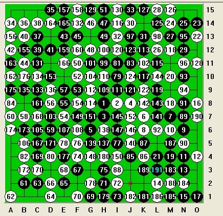

征 极度复杂的vcf题目
#1 征 极度复杂的vcf题目 作者：愉悦深思 发表时间：2010-12-1 0:21:34
理论上说，计算vcf也是指数复杂度的。#2 Re:征 极度复杂的vcf题目 作者：掌棋宣传员 发表时间：2010-12-1 0:42:40
=======上图对应的爱五子棋谱代码如下，以便你拆解：========
a15a14c15b14d15c14l15i15m15l13m14k13k12l12i13o13n13o12o11o10l9o9o6o8n5o5o1o2n2o3l1l2i3j1d1h1c1m3h6i6h8j6a10m6a11f2b11c10e12d10g10f11a7f12b8g11c5d5a3b7a4h9e7j9
======================================================
［ 愉悦深思 于 2010-12-1 2:04:46 时花20金币送鲜花一朵］
#3 Re:征 极度复杂的vcf题目 作者：霸王龙 发表时间：2010-12-1 12:29:16
好难#4 Re:征 极度复杂的vcf题目 作者：愉悦深思 发表时间：2010-12-2 18:26:45
这个 renjusolver之类还是可以秒杀的#5 Re:征 极度复杂的vcf题目 作者：愉悦深思 发表时间：2010-12-2 18:28:27
“似于象棋的连将胜， 五子棋有VCF(冲四连胜)。幸运的时，用置换表可以很好地解决VCF问题， 许多上百步的局面都可瞬间解出。但即使如此，一些几十分钟也解不开的局面还是存在的，所以对VFC扩展要有一定的限制，否则碰到那些局面时程序就死在那里了。”by----陈成涛#6 Re:征 极度复杂的vcf题目 作者：愉悦深思 发表时间：2010-12-3 1:50:15
小4老师的主页上有一些测试程序用的题目。有一个这样的vcf，当时他的程序还要一两分钟的，现在的renlib可能只要2秒，renjusolver可以瞬秒。b14c15d13b13e13e15f15o15m15o13l15o12n13j13l12k12h15o9g15f11g11f10f9f8h8f7f6d8b9a7b10a4a5a3b3a1c1e4d4f3d1k1j1m1i1n3k3j5i5h5j7j6l3g6n7l8n6j8j10j9h1i10o11h11难道真的没有更复杂的vcf了？#7 Re:征 极度复杂的vcf题目 作者：yoda 发表时间：2010-12-3 9:25:26
星诞
=======上图对应的爱五子棋谱代码如下，以便你拆解：========
h8i7o15o13n14o12o11n13m15o10k15o9a15n8c15b12e15h15b14l10a13k10o1l8o3n5o5j6l14h12n4k3n2h2l1h1k1g1a1f1e1d1b1c2b3g2b4f3a3a7a5a6a12c6d14d7
======================================================
［此帖子已被 yoda 在 2010-12-3 9:26:07 编辑过］
［ 愉悦深思 于 2010-12-3 13:43:14 时花20金币送鲜花一朵］
#8 Re:征 极度复杂的vcf题目 作者：踵酃 发表时间：2010-12-3 9:31:36
YODA 发的是VCF？ 理论上是VCF的话，只要RENJUSOLVER一扫就可以拉。不过YODA发的好像不行啊#9 Re:征 极度复杂的vcf题目 作者：yoda 发表时间：2010-12-3 9:48:44
星诞是vcf题目。因为我手头没有，所以转了吴镝贴的题目。原帖出处ShowPost.asp?PageIndex=2&ThreadID=6337［此帖子已被 yoda 在 2010-12-3 9:49:24 编辑过］
#10 Re:征 极度复杂的vcf题目 作者：yoda 发表时间：2010-12-3 11:09:14
坂田吾朗 作品蒐
黑先
=======上图对应的爱五子棋谱代码如下，以便你拆解：========
h8i8h7j8g6k7m7k6n6m6n4o4n3l2n1o8o1m8m4m10l4o13o14m14n14l12m13l15n12j14k13i13j15a14d15b14c13c14c12b13d12a12e13b11f13g14h14g12h13f11h15f10f9e7e8d8e9b7d6a7b2a1c2d1e2d2f3e3g1f1h2i2i1f4h3f5i5e5i10d4i11b4j11a8
======================================================
［此帖子已被 yoda 在 2010-12-3 11:10:30 编辑过］
［此帖子已被 yoda 在 2010-12-3 11:10:56 编辑过］
#11 Re:征 极度复杂的vcf题目 作者：愉悦深思 发表时间：2010-12-3 13:42:14
星诞 确实很难 基于bestmove.dll的程序似乎都是几十秒才能算出，不过小4老师的某版的renjusolver还是瞬秒了，好像那一版的renjusolver不能算下面这个 h8i8h7j8g6k7m7k6n6m6n4o4n3l2n1o8o1m8m4m10l4o13o14m14n14l12m13l15n12j14k13i13j15a14d15b14c13c14c12b13d12a12e13b11f13g14h14g12h13f11h15f10f9e7e8d8e9b7d6a7b2a1c2d1e2d2f3e3g1f1h2i2i1f4h3f5i5e5i10d4i11b4j11a8 不知道正版的renjusolver怎么样 谁能帮我试试有没有一个软件可以同时秒杀 星诞和上面这个要靠以禁解禁的 vcf 猜想vcf的本身的复杂度决定了vcf的计算程序是有可能遗漏某些存在vcf的局面的#12 Re:Re:征 极度复杂的vcf题目 作者：愉悦深思 发表时间：2010-12-3 13:46:01
对于一个局面，如果存在vcf，那么要找到这个vcf在99.9%的情况下是可以很快的，但是如果不存在vcf，要证明确实不存在，我自己觉得可能还是比较困难的#13 Re:征 极度复杂的vcf题目 作者：与郎共五 发表时间：2010-12-4 0:02:04
=======上图对应的爱五子棋谱代码如下，以便你拆解：========
b13c14e15d15f14f13f12g14g12g13f11g11e10b12d10c11d8d9g6e7j6f6k6h7l7i7h8i8m9m8m10i9i10h9j11h10k11j12j13k12k13j14k14l10o12n11h15o13i15n14m15l15
======================================================
#14 Re:yoda【==Re:征 极度复杂的vcf题目==】 作者：陶涛业余 发表时间：2012-7-31 12:32:28
这个题解不出来啊，求答案啊
#15 Re:愉悦深思【==Re:征 极度复杂的vcf题目==】 作者：空恨社小仙 发表时间：2012-7-31 21:47:25
#16 Re:空恨社小仙【==Re:愉悦深思【==Re:征 极度复杂的vcf题目==】==】 作者：空恨社小仙 发表时间：2012-7-31 21:49:03
11楼的秒杀如上图....#17 Re:陶涛业余【==Re:yoda【==Re:征 极度复杂的vcf题目==】==】 作者：空恨社小仙 发表时间：2012-7-31 22:38:21
［ 陶涛业余 于 2012-8-1 9:39:24 时花20金币送鲜花一朵］
#18 Re:征 极度复杂的vcf题目 作者：萧翎 发表时间：2012-7-31 22:54:34
漫天繁星局，求答案。。很多很多年的题#19 Re:萧翎【==Re:征 极度复杂的vcf题目==】 作者：空恨社小仙 发表时间：2012-7-31 23:51:48
请摆出来，如果是vcf,相信软件能搞定的#20 Re:征 极度复杂的vcf题目 作者：自来水 发表时间：2012-8-1 0:09:59
爱五子棋打谱软件2.2
Renlib3.7
只要有单独计算VCF功能的。。毫无压力秒算掉
［ 陶涛业余 于 2012-8-1 10:17:07 时花20金币送鲜花一朵］
#21 Re:征 极度复杂的vcf题目 作者：屏蔽 发表时间：2012-8-1 8:30:05
两个满天星，一个就是10步左右的VCF，冷静下来一个普通棋手都能算出来
另一个我是觉得做不出来……
#22 Re:征 极度复杂的vcf题目 作者：陶涛业余 发表时间：2012-8-1 10:24:12
请问大鱼老师说的那个“星诞”怎么解，貌似软件无法给出答案
#23 Re:陶涛业余【==Re:征 极度复杂的vcf题目==】 作者：空恨社小仙 发表时间：2012-8-1 14:47:06
星诞没有软件能解。。。做不出来，求正解